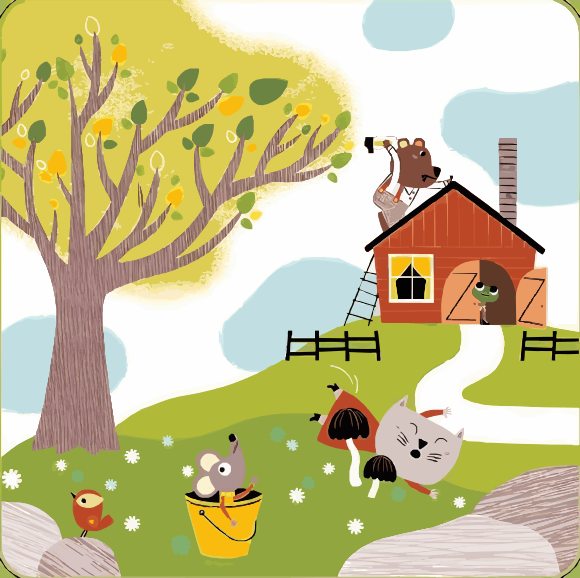

Piensa con las manos
Las fichas y tarjetas convierten cada idea espacial en una acción que se puede mirar, mover y comprobar.
Juego de mesa educativo · 4—7 años
Un pequeño gran juego para aprender a mirar el espacio. Descubre dónde están los animales y conviértete en el explorador de tu propia mesa.
Una aventura tranquila para jugar acompañado, conversar y resolver juntos.


Sobre este proyecto
Topologix es un proyecto escolar creado con fines educativos. Es una experiencia sin fines de lucro, pensada para que niños, familias y docentes compartan una forma divertida de desarrollar el pensamiento espacial.
El origen de la aventura
La versión física de referencia es un juego de observación y orientación espacial de la colección Eduludo de Djeco. Cada reto invita a descubrir dónde está cada animal respecto a los objetos de una escena: arriba, abajo, delante, detrás o dentro.
El juego físico fue diseñado por la ilustradora francesa Géraldine Cosneau. Este proyecto escolar toma esa idea de tablero, fichas y retos visuales para convertirla en una experiencia digital sencilla y accesible.
Más que un juego
Topologix transforma las palabras “arriba”, “dentro” o “atrás” en una misión concreta, visual y fácil de compartir.
Las fichas y tarjetas convierten cada idea espacial en una acción que se puede mirar, mover y comprobar.
Los retos avanzan poco a poco para que cada acierto se sienta como una pequeña victoria.
Una experiencia para conversar, hacer preguntas y celebrar el razonamiento de los más pequeños.
La receta del explorador
Solo necesitas mirar con atención y dejar que las pistas te lleven a la casilla correcta.
Escoge una tarjeta y colócala frente a ti.
Busca los animales y descubre su relación con cada objeto.
Relaciona animal y posición en el tablero de doble entrada.
Voltea la tarjeta; aquí, toca una casilla para verificar.
Elige tu aventura
Empieza por el primer escenario o vuelve a jugar para encontrar nuevos detalles.